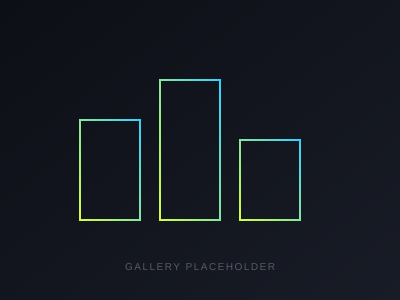
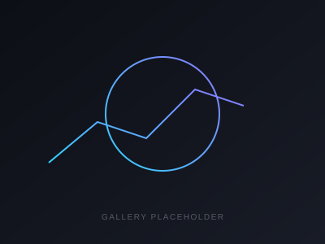
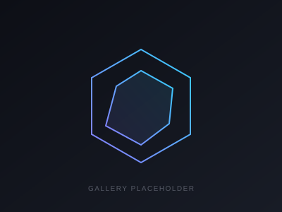

Descripción
Un enfoque estructurado para analizar el rendimiento de un jugador mas alla del resultado final: errores no forzados por tipo de golpe, rendimiento bajo presion (break points, tiebreaks), y esfuerzo fisico a lo largo de un partido o temporada.
Problema
Los entrenadores miran los partidos en vivo y confian en la memoria y el instinto para identificar que salio mal. Patrones pequenos pero repetidos, como una caida en la derecha bajo presion o un rendimiento fisico que decae en el tercer set, son faciles de pasar por alto sin un seguimiento estructurado.
Solución
Un framework liviano de estadisticas para registrar eventos clave del partido durante el juego, y luego visualizarlos despues para detectar patrones recurrentes entre partidos, no solo momentos aislados.
Proceso
- Definir los eventos que vale la pena registrar (errores, winners, break points, duracion de los puntos)
- Registrar datos durante o inmediatamente despues de los partidos para mantener la precision
- Agregar datos entre partidos para separar momentos puntuales de patrones reales
- Visualizar tendencias para que el jugador y el entrenador las revisen juntos
Tecnologías
StatisticsExcelVisualizationResultados
Feedback concreto y especifico reemplazo las impresiones genericas post-partido: los jugadores pudieron ver exactamente que situaciones les costaban puntos a lo largo de una temporada, no solo un mal dia puntual.
Galería



Aprendizajes
El valor no esta en registrar todo, esta en registrar las pocas metricas que realmente cambian un plan de entrenamiento. Sobre-instrumentar un partido hace el analisis mas lento sin hacerlo mejor.